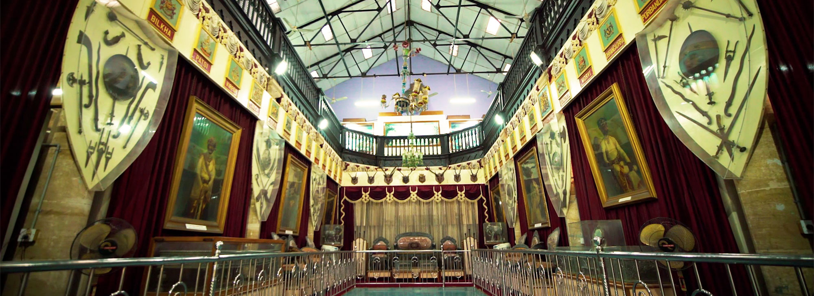
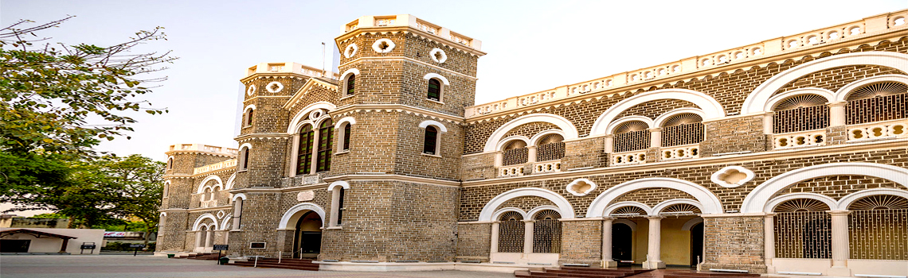
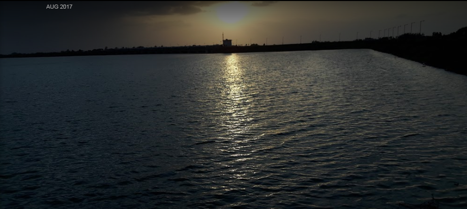
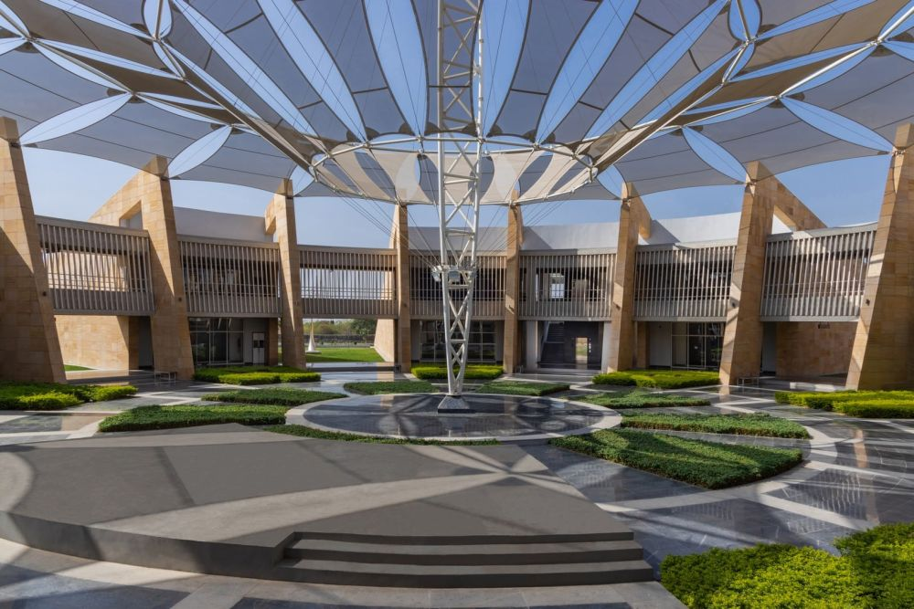
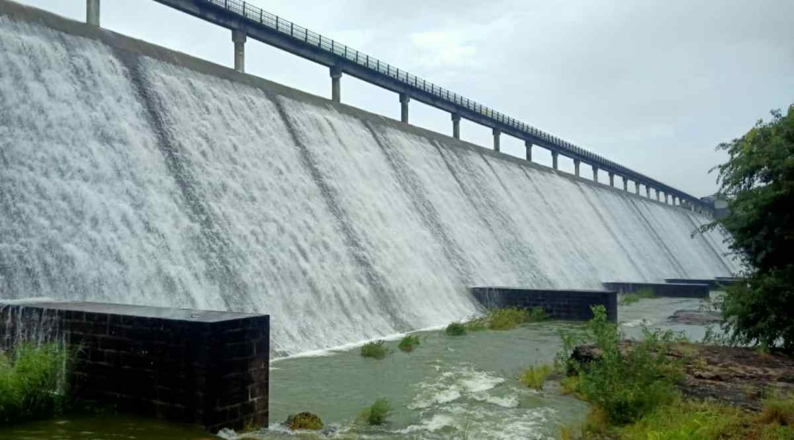
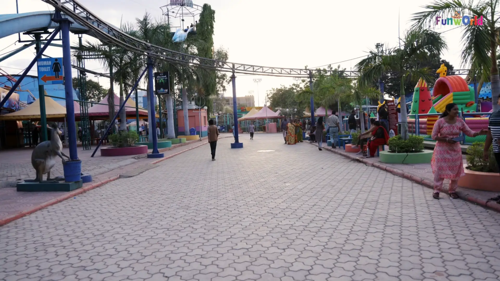

Rajkot Palace: A Royal Heritage
Rajkot Palace, also known as the Watson Museum, is a historical palace that showcases the rich heritage of Rajkot.
Fun Fact:
~It was built in the 19th century and served as the residence of the British Commissioner!
Things to Explore at Rajkot Palace:
-
The Grand Architecture:
Admire the stunning architecture and intricate carvings of the palace!
-
The Museum:
Explore the museum that houses artifacts from Rajkot’s history and culture!
-
The Gardens:
Stroll through the beautiful gardens surrounding the palace!
-
The Art Gallery:
Discover local art and exhibitions held within the palace premises!
-
The Cultural Events:
Attend cultural events and performances organized at the palace!
Why Visit Rajkot Palace?
!Because it’s a perfect place to delve into Rajkot’s royal history and architectural beauty!

Kaba Gandhi No Delo: The Birthplace of Mahatma Gandhi
Kaba Gandhi No Delo is the ancestral home of Mahatma Gandhi, where he spent his early years.
Fun Fact:
~It has been converted into a museum that showcases his childhood and early influences!
Things to Explore at Kaba Gandhi No Delo:
-
The Childhood Memories:
Explore the rooms where Gandhi spent his childhood and learn about his early life!
-
The Museum:
Discover exhibits that highlight Gandhi’s journey and philosophies!
-
The Garden:
Relax in the serene garden that surrounds the house!
-
The Library:
Visit the library that contains books and writings related to Gandhi!
-
The Cultural Programs:
Attend cultural programs and discussions held at the site!
Why Visit Kaba Gandhi No Delo?
!Because it’s a significant place to understand the early influences that shaped Mahatma Gandhi’s life!

Nyari Dam: A Scenic Retreat
Nyari Dam is a picturesque dam located on the outskirts of Rajkot, offering a serene escape into nature.
Fun Fact:
~It’s a popular spot for picnics and outdoor activities!
Things to Explore at Nyari Dam:
-
The Scenic Views:
Enjoy breathtaking views of the dam and surrounding hills!
-
The Boating Experience:
Take a boat ride on the calm waters of the dam!
-
The Picnic Spots:
Relax at designated picnic spots with family and friends!
-
The Wildlife:
Observe local wildlife and bird species around the dam area!
-
The Sunset Views:
Witness stunning sunsets that paint the sky in vibrant colors!
Why Visit Nyari Dam?
!Because it’s a perfect place to unwind and connect with nature away from the city hustle!

Rotary Museum of Science and Technology: A Learning Hub
The Rotary Museum of Science and Technology is an interactive museum that aims to make learning fun for all ages.
Fun Fact:
~It features over 300 exhibits related to science, technology, and innovation!
Things to Explore at Rotary Museum:
-
The Interactive Exhibits:
Engage with hands-on exhibits that make learning about science exciting!
-
The Workshops:
Participate in workshops and demonstrations conducted by experts!
-
The Planetarium:
Experience the wonders of the universe in the museum’s planetarium!
-
The Educational Programs:
Join educational programs designed for students and enthusiasts!
-
The Innovation Hub:
Explore innovations and inventions showcased at the museum!
Why Visit Rotary Museum?
!Because it’s a fantastic place to ignite curiosity and foster a love for science and technology!

Aji Dam: A Tranquil Escape
Aji Dam is a serene dam located near Rajkot, offering a peaceful environment for relaxation and recreation.
Fun Fact:
~It’s a popular spot for birdwatching and nature photography!
Things to Explore at Aji Dam:
-
The Scenic Beauty:
Enjoy the picturesque views of the dam and surrounding landscapes!
-
The Walking Trails:
Take leisurely walks along the trails that wind around the dam!
-
The Picnic Areas:
Relax at designated picnic spots with family and friends!
-
The Birdwatching:
Observe various bird species that inhabit the area!
-
The Photography Opportunities:
Capture stunning photographs of the dam and its surroundings!
Why Visit Aji Dam?
!Because it’s a perfect place to escape the city noise and enjoy the tranquility of nature!

Fun World: A Family Entertainment Park
Fun World is a popular amusement park in Rajkot, offering a variety of rides and attractions for all ages.
Fun Fact:
~It’s a great place for families to spend quality time together!
Things to Explore at Fun World:
-
The Thrilling Rides:
Experience adrenaline-pumping rides and attractions!
-
The Water Park:
Enjoy splashes and fun at the water park section!
-
The Kids’ Zone:
Let the little ones have a blast with kid-friendly rides and games!
-
The Food Court:
Savor delicious snacks and meals available at the park!
-
The Entertainment Shows:
Catch live performances and shows held throughout the day!
Why Visit Fun World?
!Because it’s a perfect place for family fun and entertainment in Rajkot!